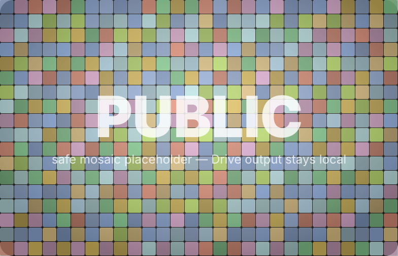

Mosaic Year / 대표 판단용 PoC
사진을 색칠하지 않고,
배치로 대표 이미지를 만듭니다.
Drive 샘플 50개 다운로드 및 로컬 PoC는 완료했습니다. 다만 GitHub repo가 public이므로 원본 사진과 실제 Drive 기반 mosaic JPEG는 public push에서 제외합니다. 실제 판단 전에는 standard.jpg를 추가하면 동일 파이프라인으로 로컬 재생성됩니다.
Public-safe mock — local Drive test completed
Output mosaic

타일은 EXIF 보정, 중앙 크롭, 리사이즈만 적용했습니다. 개별 사진의 색감을 강제로 바꾸지 않아 확대했을 때 ‘내 사진’으로 남는 방향입니다.